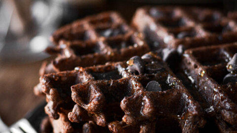

chocoletewaffles
- 1 ½ cups all-purpose flour
- ½ cup white sugar
- 3 tablespoons unsweetened cocoa powder
- 3 teaspoons baking powder
- ½ teaspoon salt
ingredients
Hard sauce!
- 1 tablespoon butter, softened
- ¾ cup confectioners' sugar
- ½ teaspoon vanilla extract
- 1 teaspoon milk
- You can use a none-stick pan.
Step 1
Gather all ingredients. Preheat a waffle iron.
Step 2
Make waffles: Stir together flour, sugar, cocoa, baking powder, and salt in a large mixing bowl. Stir in milk, eggs, and butter until the mixture is smooth.Step 3
Make hard sauce: stir together softened butter, confectioners' sugar, vanilla extract, and milk. Sauce should be fairly stiff. Set aside.
Step4
Spray preheated waffle iron with nonstick cooking spray. Pour waffle mix onto hot waffle iron. Cook until golden brown.
Step5
Serve hot with hard sauce!
